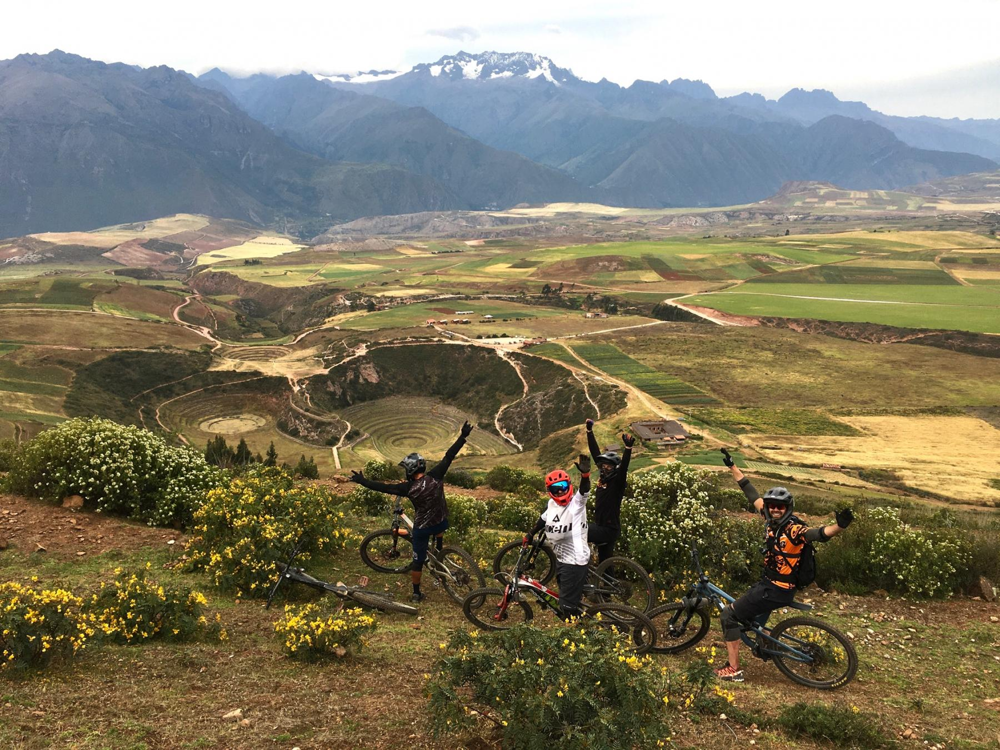
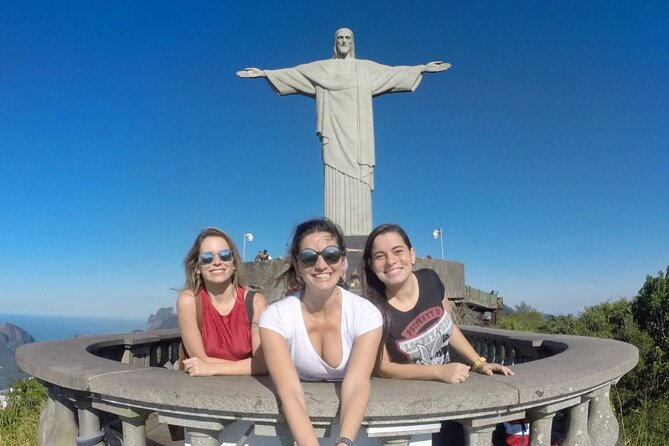
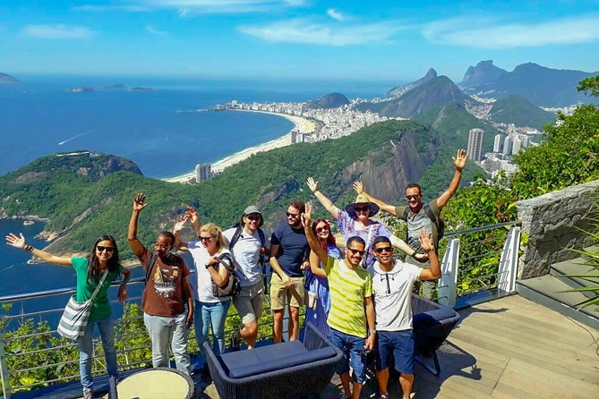

El Cristo Redentor está abierto todos los días de 8:00 a 19:00 hs. Se recomienda visitar temprano para evitar multitudes.
Machu Picchu

Ubicación
Ciudad: Cusco
País: Peru
Descripción
Es una de las maravillas más emblemáticas del mundo y el símbolo más reconocido del Perú. Ubicada a más de 2.400 metros sobre el nivel del mar, entre las majestuosas montañas de los Andes y rodeada por una densa selva tropical, Machu Picchu fue construida en el siglo XV durante el apogeo del Imperio Inca. Sus imponentes terrazas, templos y estructuras de piedra perfectamente encajadas muestran el avanzado conocimiento arquitectónico y astronómico de esta antigua civilización. Visitar Machu Picchu es una experiencia única: se puede llegar en tren desde Cusco o recorrer el famoso Camino Inca, disfrutando de paisajes naturales impresionantes. Desde la cima, las vistas son inigualables, ofreciendo un contacto directo con la historia, la cultura y la energía mística de este sitio declarado Patrimonio de la Humanidad por la UNESCO.
Actividades Turísticas

Camino Inca
Ubicado en la cima del Cerro del Corcovado en Río de Janeiro

Ollantaytambo
Famosa playa de Río con arena blanca y vibrante vida nocturna.

Machu Picchu
Paseá por jardines tropicales, senderos históricos y disfrutá de la mansión y vistas del Corcovado.

Aguas Calientes
Disfrutá de la fiesta más colorida y famosa de Brasil.

Rafting
Subí en teleférico y disfrutá de vistas panorámicas únicas de Río.

Ciclismo Montaña
Conocida por sus playas de arena blanca y aguas turquesa ideales para relajarse.
Cómo llegar al Cristo Redentor
Copacabana
Punto de partida
Van oficial
Duración aproximada: 50 min
Cristo Redentor
Entrada principal
Todo lo que debes saber antes de visitar
Se puede acceder mediante el tren del Corcovado desde el barrio Cosme Velho, en van oficial, taxi o auto particular hasta la estación. El viaje dura entre 20 y 50 minutos dependiendo del transporte.
Los precios varían según el tipo de transporte y edad del visitante. Para adultos, el tren del Corcovado cuesta aproximadamente 90 BRL, mientras que niños y estudiantes tienen descuentos.
Se recomienda llevar agua, protector solar, gorra, cámara o celular, y ropa cómoda. Durante días lluviosos, es útil un impermeable, ya que el clima puede cambiar rápidamente en la montaña.
Sí, se permite la fotografía y grabación para uso personal. Se recomienda respetar las normas del lugar y no obstaculizar el paso de otros visitantes.
Sí, tanto el tren del Corcovado como los accesos y plataformas están adaptados para sillas de ruedas y personas con movilidad reducida. Se recomienda consultar horarios especiales si se necesita asistencia adicional.
Reseñas de Nuestros Viajeros

Lara Hernández
"Muy buena la comunidad viajera, me gusta la asesoría personalizada para los viajes"

Lautaro Landucci
“Súper recomendado, fue una experiencia increíble y el viaje superó todas mis expectativas.”

Jordi Barea
“Gracias a la comunidad viajera pude resolver todas mis dudas con la asesoría y disfrutar por completo del viaje.”